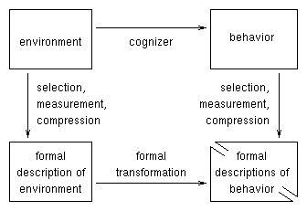

Introduction.
All branches of science create models of the systems they study. In fact, many cognitive scientists believe that a fundamental aspect of human intelligence is the active construction and manipulation of mental models of the world. What's so great about models?
1.1 The goals and roles of modeling.
Models serve many purposes; perhaps the most obvious is prediction of future states of the modeled system. This is clearly the primary purpose of mental models used by people in "the real world".
There is another purpose for modeling in science. When struggling to understand some system in the world, scientists usually think first of relatively vague, informal principles that underlie the system's behavior. The scientists then conduct experiments to test the informal explanatory principles. If the explanatory principles are confirmed, then they can be made explicit and independent from the intuitions of the theorist by expressing the principles in a formal model. A formal model also makes relatively precise predictions, and can be tested more stringently than the informal principles. If a model can be constructed which adequately fits the data, then the underlying explanatory principles accrue more support. Thus, even if a formal model isn't predictive, it can support understanding and explanation.
Note also that a model can be predictive without being explanatory. This type of model is sometimes referred to as "mere curve fitting". Such a model fits the known data and interpolates or extrapolates to newly tested situations, but does not express any explanatory principles. In summary, a model can be predictive without being explanatory, or a model can be explanatory without being predictive. Ultimately we would like our models to be both explanatory and predictive.
1.2 The structure of modeling.
Figure 1 shows the general scheme of cognitive modeling. The top row refers to stuff in the real world. The bottom row denotes formal representations of this stuff. The top row, going from "environment" through the "cognizer" to "behavior" could really refer to any system that has input, processing, and output. (There is usually assumed to be some temporal and causal priority of the input, but this is not essential.)

Figure 1. The structure of modeling.
We can observe the environment and the behavior of the cognizer, but we cannot observe its innards (and even when we do, it doesn't reveal how it works). Our goal is to explain how the cognizer generates its particular behavior in particular environments.
The first step in modeling is formally representing the environment and the behavior. That is, we have to measure the observable stuff in the world. But we don't measure everything, instead we select some aspects that seem relevant to the behavior we are interested in. Moreover we don't measure with infinite detail and accuracy, instead we compress and summarize our measurements. These acts of selection, measurement, and compression yield formal descriptions of the environment (input) and behavior (output).
A model is a formal transformation, or function, which takes as its input the formal description of the environment, and produces as its output a predicted formal description of the behavior. If the model is a good one, its output will closely match the measured behavior of the real cognizer.
The formal transformation might involve many intervening variables, or formal constructs, or internal representations. In an explanatory model, these internal formal constructs are supposed to correspond to something in the cognizer being modeled. The internal formal constructs should be expressions of the underlying explanatory principles that motivated the model.
As an example, consider one of Newton's laws, a=F/m, where a is the acceleration of an object, F is the force on the object, and m is the mass of the object. The "environment" for this system is the force and mass. The "behavior" is the acceleration. The "cognizer" is the physical system that converts force and mass into acceleration. Physicists have developed thoroughly systematized operations for measuring mass, force, and acceleration, whereby we get formal representations F, m and a. Newton's law is a formal model that transforms F and m into a predicted value of a. The model is an accurate one if the predicted value of a matches the measured value.
In general, for any model of the form y=f(x), the relevant "environment" is whatever x refers to, the relevant "behavior" is whatever y refers to, and the "cognizer" is whatever carries out the transformation that f refers to.
There are many formalisms to choose from when modeling a system. The application of connectionist formalisms to human cognition was originally motivated by the ideas that cognition is carred out by massively parallel and distributed processing on neurons, and that this type of processing will have a strong influence on behavior. Thus, connectionist modeling is motivated to some extent by a denial of an axiom in artificial intelligence: If we don't need flapping wings to fly, we don't need brains to think. I don't think connectionists want to deny the possibility of artificial intelligence, but connectionists often do argue that brain-style processing is necessary for good models of human cognition.
2.1 Characteristics and appeal of connectionist models
There are two overarching appealing aspects of connectionist network behavior: Learning by example and constraint satisfaction.
2.1.1 Learning by example.
2.1.2 Constraint satisfaction.
3.1 Nodes as neurons (or atoms or concepts or people or societies) Although connectionist networks were motivated by neurons, the nodes in connectionist networks can correspond to many different levels of analysis.
3.2 Progression of architectures: A framework for the course
| Progression of Architectures |
|
3.3 A recurring theme: Local and global analyses
We will see repeatedly that "local" computations, i.e., computations that use only information that is directly accessible to individual nodes or connections, yield a global (network wide) interpretation, and that global motivations can translate into purely local computations.
| Selected correspondences of local and global analyses | |
| Local | Global |
| Hebbian learning in linear networks | Gradient ascent on global goodness; maximal preservation of global information |
| Delta-rule learning | Gradient descent on global error |
| Local activation updates in symmetric recurrent networks | Hill-climbing on global "goodness" |
| Local learning rule in Boltzmann machines | Gradient descent on global measure of discrepancy |
| Competitive learning rule | Gradient ascent on global summed activation (gaussian nodes) |
The PDP programs take a number of files as input: The "template" file and optional associated "look" file, the "startup" file, and the "network" file. A PDP program can generate an record of its processing, called a "log" file.
To analyze results, you can use the "colex" program to extract only the relevant data from the log file, and then use the "plot" program to make rough plots of the data. The plot program takes as input both the data file and a "format" file.
Details will be discussed and demonstrated in class.
Copyright © 1997 by John K. Kruschke